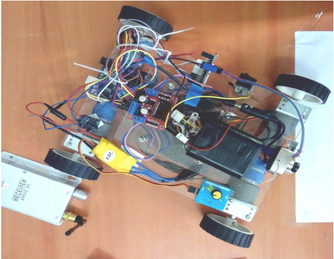

Wall Climbing Robot

Motivation of a climbing robot with the ability to maneuver on vertical surfaces is to increase the operation efficiency in dangerous environments or places which are dangerous for human beings where safety measurements are too important. wall climbing robots are used in applications such as inspection,welding, etc. All these robots are developed by using different types of techniques like: vacuum suction. magnetic or electromagnetic force, or gripping with claws. Every technique has some positive points and restrictions. For instance, magnetic adhesion can be used for a strong base for a high safety purpose, but is used only for ferromagnetic surfaces and for iron surface. Second technique, suction adhesion is based upon a complete vacuum with the surface. walking on porous & non-porous surfaces. The proposed system is to make a robot which can climb easily on wall and preferably on any type of wall.